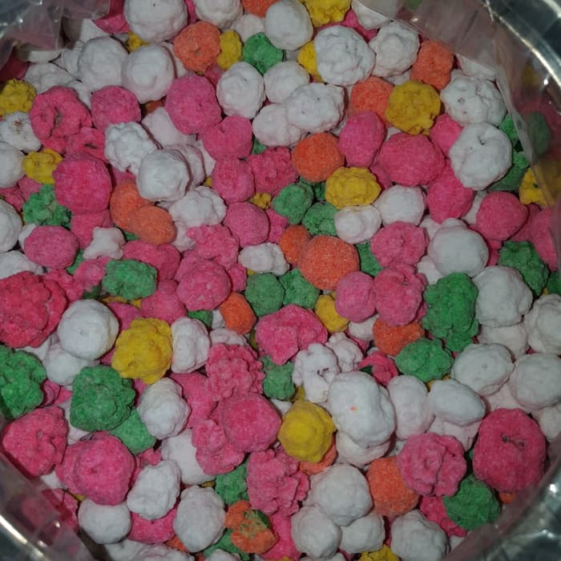

- 
-
Jajanan lain dari Mongondow yang juga menjadi Makanan Khas Lolak Bolaang Mongondow yaitu kacang goyang terbuat dari kacang tanah. Jajanan ini identik dengan warna.
Proses pemberian warna makanan dinamakan penggoyangan. Itulah kenapa dinamakan dengan kacang goyang.
Pada tahun 2010, jajanan khas suku Mangondow mendapatkan rekor Muri yang bertepatan dengan Hari Jadi Kota Kotamobagu Ke-3 dengan melibatkan 500 wanita dalam proses pembuatan kacang goyang.
Bahan utamannya kacang tanah yang disangrai kemudian dipisahkan bagian kulit arinya dengan biji kacang.
Proses selanjutnya adalah adonan diteteskan gula dan coklat sambil digoyangkan sampai semua biji kacangnya tertutupi oleh lapisan gula dan coklat.
Rasanya yang guri dan renyah, sehingga banyak diminati, dicari oleh warga lokal ataupun interlokal untuk di bawah pulang. Sehingga menjadi salah satu oleh-oleh jajanan khas suku Mongondow.